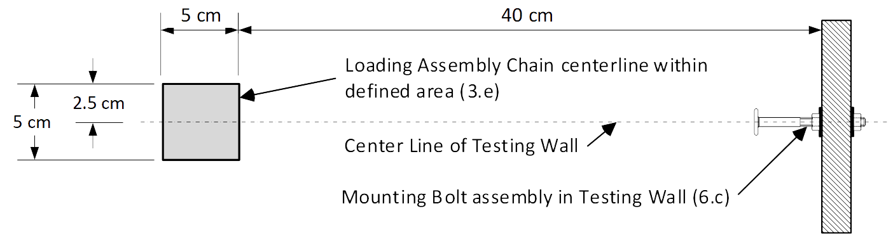
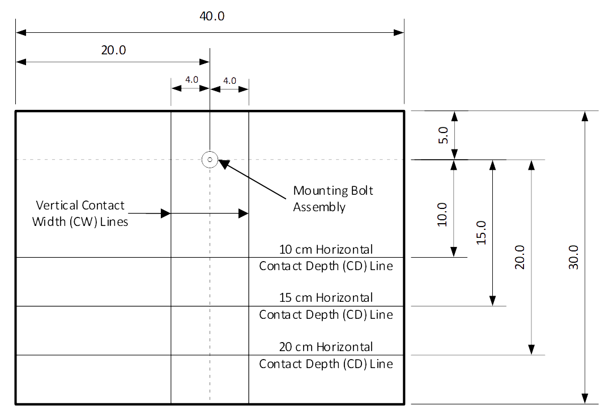
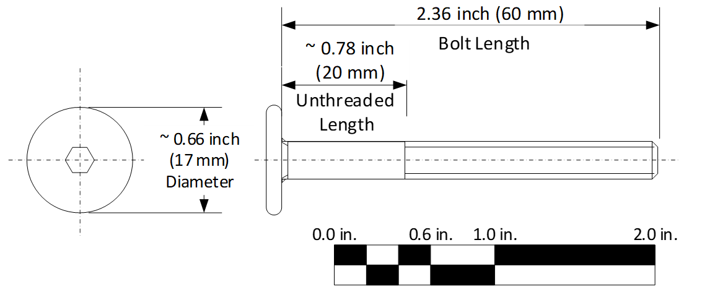
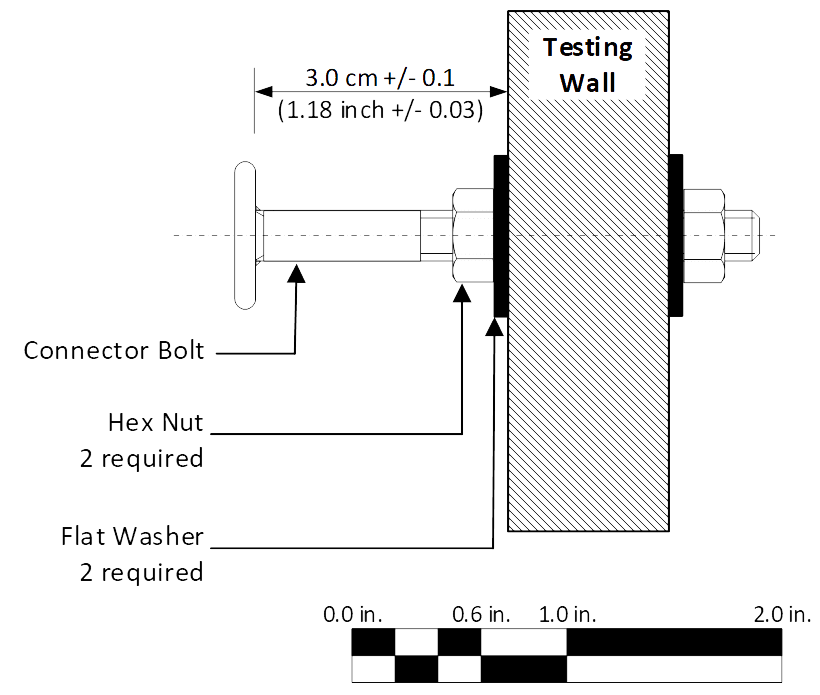
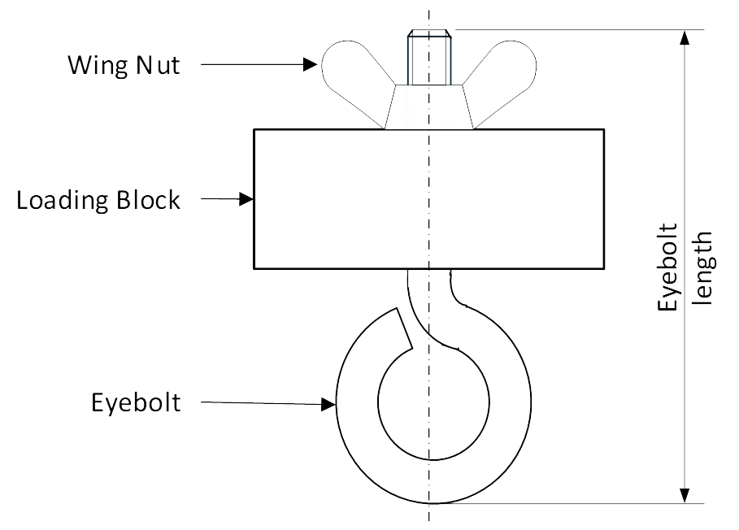
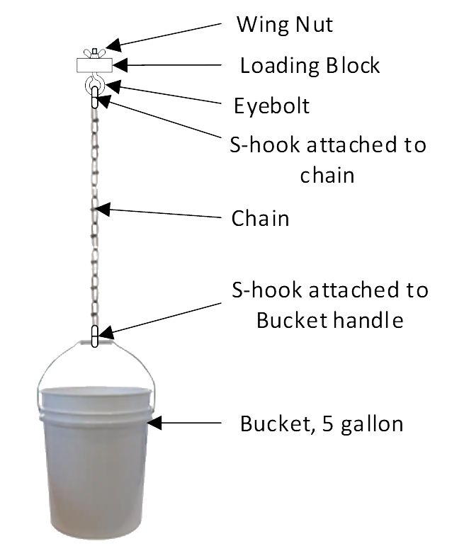

← All Events
Full official rules from the 2027 Division B Rules Manual
1. DESCRIPTION
Teams will build a cantilevered beam or truss structure that extends from a vertical
Testing Wall and supports a load at a specified height and distance from the Testing Wall. The structure
must meet the requirements specified in these rules to achieve the highest score, which is a combination of
Structural Efficiency and Load Scored Bonus.
A TEAM OF UP TO: 2 APPROXIMATE TIME: 10 minutes
EYE PROTECTION: B IMPOUND: No
2. EVENT PARAMETERS
a. Each team may enter only one structure in the competition.
b. Eye Protection B protective eyewear must be worn during competition (required ANSI marking: Z87+).
c. Design Knowledge: Participants must be able to answer questions on construction & operation.
d. At in person tournaments, Test Apparatus will be supplied by the Event Supervisor. Participants may not
measure or adjust Test Apparatus or bring any apparatus, equipment, tools or instruments.
3. CONSTRUCTION PARAMETERS
a. Single Structure: no separate, loose or detachable parts or pieces.
b. The structure is constructed of wood, bonded by adhesive (7.a. – 7.d.). No other materials permitted.
c. Structure attaches to the testing wall by resting on the Mounting Bolt Assembly (6.b.v.).
d. Structure supports only the Loading Block of the Loading Assembly (6.c.i.) which supports the balance
of the Loading Assembly.
e. Structure supports the Loading Assembly (6.c.) with the centerline of the chain being:
i. At least 40 cm but no more than 45 cm when measured horizontally from the Testing Wall (6.b.).
ii. No more than 2.5 cm horizontally from either side of a perpendicular line extending from the
centerline of the Testing Wall.

Figure 1 — Top view of Testing Wall, showing load arm extending 40–45 cm horizontally (not to scale)
f. During the Competition testing, the Boomilever may ONLY touch the Testing Wall surface INSIDE the
Vertical Contact Width Lines (6.b.iv.). Contact with the sides, top or bottom of the Testing Wall is not
allowed.
g. Prior to loading sand, the bottom of the Loading Block must be supported ABOVE the horizontal
plane extending from the centerline of the Mounting Bolt. During loading, the bottom of the loading
block may go below the horizontal plane extending from the centerline of the Mounting Bolt.
h. Base Option:
i. During the Competition testing, the Boomilever may ONLY touch the Testing Wall ABOVE
the 20 cm Horizontal Contact Depth Lines (6.b.iii.). Structures touching below the 20 cm
Horizontal Contact Depth Lines shall be placed in Tier 2.
i. Load Scored BONUS option scored if both of the following requirements are met in place of 3.h.:
i. During the Competition testing, the Boomilever may ONLY touch the Testing Wall ABOVE
the 15 cm Horizontal Contact Depth Line (6.b.iii.). Structures touching below the 15 cm
Horizontal Contact Depth Lines shall be scored based on 3.h.
ii. The structure must hold 15 kg. to earn the Load Scored Bonus. If the structure does not hold
the 15 kg, the Boomilever will be scored using the Load Supported without the Load Scored
Bonus. No construction violation will be recorded for not holding the 15 kg. Structures in Tier
2 can receive the bonus if tiered for rules other than 3.h.i.
BOOMILEVER B
BOOMILEVER B (CONT.)
4. COMPETITION
a. Prior to competition, the Event Supervisor will:
i. Verify all Test Apparatus are available and properly set-up per section 6.
ii. Verify the mass of the Loading Assembly meets requirements of 6.c.v.
iii. Verify that the combined mass of the Loading Assembly (6.c.) and sand (6.d.) is at least 15,100 g.
but no more than 15,200 g.
b. Check-in:
i. Once participants begin check-in they may NOT leave or gain any outside assistance, materials or
communications (including cell phone communication) until Testing is completed.
ii. No alterations to the structure may be made once check-in begins.
iii. Event Supervisor will verify:
(1) Participants have proper Eye Protection
(2) Structure meets Construction parameters
(3) Teams have submitted their Estimated Load Supported to be used as a tie breaker
iv. Participants will place the structure on the Structure Scale so the Event Supervisor can determine the
structure mass to the nearest 0.01 gram or best precision available.
c. Testing:
i. Teams will have 6 minutes to set up and test their Structure on the Testing Wall with the Loading
Assembly. If necessary, participants may disassemble the Loading Assembly but must reassemble
in the same order as presented by the Event Supervisor (6.c.). The bucket must be mounted to allow
enough clearance above the floor for the bucket to tilt or the Structure to deflect.
ii. The Event Supervisor will check the following before loading of sand begins:
(1) Conformity to the requirements 3.c., 3.d., 3.e., 3.f., 3.g., 3.h.
(2) Conformity to requirements 3.i.i. to determine if structure meets construction requirements for
Load Scored Bonus.
(3) The bucket is suspended to have clearance above the floor for testing. (e.g. 2 inches)
iii. Structure may not be adjusted once loading of sand has begun.
iv. Participants will load sand and may stabilize the Bucket from movement. Bucket may only be
stabilized from movement by the tips of Bucket Stabilizing Sticks (6.e.). The Bucket may not be
lifted or pushed.
v. Loading stops immediately when the Structure fails, the load is supported by anything other than the
Structure, the Structure receives any vertical support other than the Mounting Bolt, or time expires.
At the Supervisors discretion, sand may be removed from the bucket if pouring continued after the
Structure fails or time expires.
vi. Load Supported is determined and recorded to the nearest gram. Load Supported is the combined
mass of the Loading Assembly (6.c.) and Sand (6.d.) in the Bucket, with any parts of the Structure
in the Bucket removed prior to measurement.
vii. The Minimum Load Supported is the mass of the Loading Assembly (6.c.). If a Structure cannot
hold the Loading Assembly (6.c.), the team will be scored as participation only.
viii. The Maximum Load Supported is 15,000 g.
ix. Test Data Review. The Event Supervisor will review with the team the data recorded on their score
sheet. Once data is acknowledged by the team, the Testing is complete.
x. Teams who wish to file an appeal must leave their structure with the Event Supervisor.
5. SCORING
a. High Score Wins. Score = Load Scored (5.c.)/ Structure Mass (4.b.iv.).
b. Load Scored Bonus: meeting the Load Scored BONUS construction parameters (3.i.) Bonus = 5,000 g.
c. Load Scored = Load Supported (4.c.vi.) + Load Scored Bonus (5.b.).
d. Structures will be placed in one of 3 categories.
i. Tier 1: meeting all construction and competition requirements.
ii. Tier 2: NOT meeting any one or more of the construction and/or competition requirements.
iii. Unable to be loaded, not supporting the minimum load (4.c.vii.), no eye protection, structure does
not fit on test stand or for safety concerns. Scored for participation only.
e. Tiebreakers
i. Lowest Structure mass.
ii. Estimated Load Supported that is the closest to actual load supported.
BOOMILEVER B (CONT.)
6. TEST APPARATUS
a. In-Person tournaments: The Event Supervisor will provide all Test Apparatus. At the Event Supervisor’s
discretion, more than one Test Apparatus may be used. Satellite Tournaments: the team coach or designee
will supply the Test Apparatus.
b. The Testing Wall
i. Solid and rigid surface at least 40.0 cm wide x 30.0 cm high. Constructed of ¾” grade plywood or
other suitable material, with a smooth, hard, low friction surface that does not bend when loaded.
The Testing Wall must be adjusted to be plumb vertical by the Event Supervisor utilizing a 9”
torpedo level or similar method.
ii. One Mounting Bolt hole no larger than 0.266-inch diameter must be drilled through the wall located
approximately 5.0 cm below the top of the Testing Wall and halfway between the sides of the wall.
The horizontal and vertical centerlines of the Mounting Bolt hole must be marked on the face of the
Testing Wall.
iii. Horizontal Contact Depth Lines must be clearly visible on the Testing Wall. They must be drawn at
10 cm, 15 cm, and 20 cm and below the center of the Mounting Bolt hole.
iv. Two vertical Contact Width Lines must be clearly visible on the Testing Wall. They will be drawn
4.0 cm to the right and left side of the center of the Mounting Bolt hole.

Figure 2 — Testing Wall face showing Mounting Bolt position, Contact Width lines, and Horizontal Contact Depth lines (dimensions in cm)
BOOMILEVER B (CONT.)
v. The Mounting Bolt Assembly
(1) The Mounting Bolt Assembly will consist of:
(a) Connector Bolt, ¼ -20 x 2.36 inches (60 mm) long, with a 0.66-inch (17 mm) diameter head
and 0.78 inch (20 mm) unthreaded section, 1 required. (Figure 3)

Figure 3 — Connector Bolt: ¼-20 × 2.36 in (60 mm) with ~0.78 in unthreaded length and ~0.66 in head diameter
(b) Hex Nut, American National Standard, 1/4 – 20, 0.23-inch-thick maximum, 2 required.
(c) Flat Washer, USS ¼ inch, approx. 3/4 inch outside diameter x 0.09-inch-thick maximum, 2
required.
(2) The Mounting Bolt Assembly will be secured in place on the Testing Wall by the Event
Supervisor as follows:
(a) The Connector Bolt will have a hex nut and flat washer on the front side of the Testing Wall
and a hex nut and flat washer on the back side of the Testing Wall.
(b) Connector Bolt is installed to allow 3.0 cm +/- 0.1 cm (1.18 inch +/- 0.03 inch) clearance
between the closest face of the Connector Bolt to the Testing Wall and the Testing Wall face
(Figure 4).
(c) The nuts must be tightened firmly to hold the bolt in place during the competition.
(d) Teams may not adjust or disassemble the Mounting Bolt Assembly.

Figure 4 — Mounting Bolt Assembly installed in Testing Wall
c. The Loading Assembly will consist of:
i. A square Loading Block measuring 5 cm x 5 cm x approximately 2 cm high with a hole no larger
than 0.266-inch diameter drilled in the center of the 5 cm x 5 cm faces for a ¼” threaded eyebolt.
ii. A ¼ inch threaded eyebolt (1-inch nominal eye outside diameter) with an overall length no longer
than 3 inches, and a ¼ inch wing nut. The Loading Block must be mounted on the eye bolt and be
trapped between the “eye” of the eye bolt and the wing nut.

Figure 5 — Loading Block (5×5×~2 cm) with threaded eyebolt and wing nut (not to scale)
iii. A chain and S-hook that are suspended from the eyebolt on the Loading Block.
iv. A five-gallon plastic bucket with handle and hook to be suspended from the chain.
v. The total combined mass of the Loading Assembly may not exceed 1,500 g.

Figure 6 — Full Loading Assembly: Loading Block, eyebolt, chain, S-hook, and 5-gallon bucket (not to scale)
BOOMILEVER B (CONT.)
BOOMILEVER B (CONT.)
d. Sand: Load will be applied using Sand.
e. Two (2) Bucket Stabilizing Sticks each made from a piece of ½” dowel approximately 18 inches long
with a spring-type doorstop screwed into one end.
½” dowela pproximately 18 inches long spring-typed oorstop screwedi ntoo ne end.
Figure 7 – Stabilizing Stick (not to scale)
f. Structure scale: A digital scale is recommended. The scale is recommended to have a minimum range
of 0 to 100 grams with a recommended resolution of 0.01 gram and minimum resolution of 0.1 grams.
g. Sand scale and load verification: A digital scale is recommended. The scale is recommended to have a
range of 0 to 25,000 grams and a minimum range of 0 to 16,000 grams. The scale is recommended to
have a resolution of 1 gram and a minimum resolution of 10 grams.
h. A digital countdown timer is recommended. Must be capable of being set to 6 minutes. Minimum
resolution: 1 second
7. DEFINITIONS
a. Wood is defined as the hard, fibrous substance making up the greater part of the stems, branches, trunks,
and roots of trees beneath the bark. Wood does NOT include bark, particleboard, wood composites,
bamboo or grasses, paper, commercially laminated wood (i.e., plywood), or pieces formed of sawdust,
wood shavings, and adhesive. Wood may never be painted, soaked, or coated in glue, chemically
modified, color enhanced, or have tape/preprinted/paper labels affixed. Ink barcodes or markings from
the construction process may be left on the wood.
b. Wood Size: There are no limits on the cross-sectional sizes of individual pieces of wood.
c. Lamination: multiple layers of wood may be bonded together using adhesives by the team without
restriction. Commercially laminated wood is not allowed.
d. Adhesive is a substance used to join two or more materials together and may be used only for this
purpose. Any commercially available adhesive may be used (e.g., glue, cement, cyanoacrylate, epoxy,
hot melt, polyurethane, and super glue). Adhesive tapes are not allowed.
e. Connector Bolt can be found at several stores including Ace Hardware, Fleet Farm, Home Depot, Lowes,
Menards, and Amazon. The bolt is sold under the following brand names: Hillman, Everbilt, and Midwest
Fastener. The Connector Bolt is typically in the specialty fasteners section in a drawer labeled “Furniture
Parts”. The bolt comes in at least 4 finishes: Black, Brass, Bronze and Nickel. The black finish being
preferred, but any of the listed finishes may be used.
f. Sand is defined as a clean, dry, free-flowing material of a similar density and flowability characteristics
to play sand or steel shot.
This event is supported by the Cleveland-Cliffs Foundation
Source: Science Olympiad 2027 Division B Rules Manual ©2027. For the most up-to-date rules, rule corrections, and clarifications visit
soinc.org.